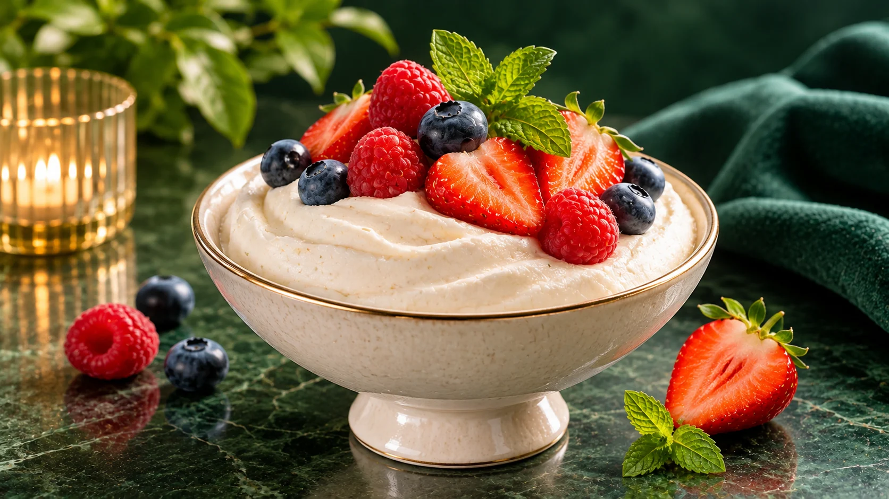
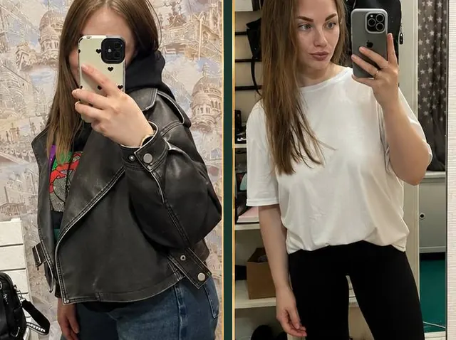
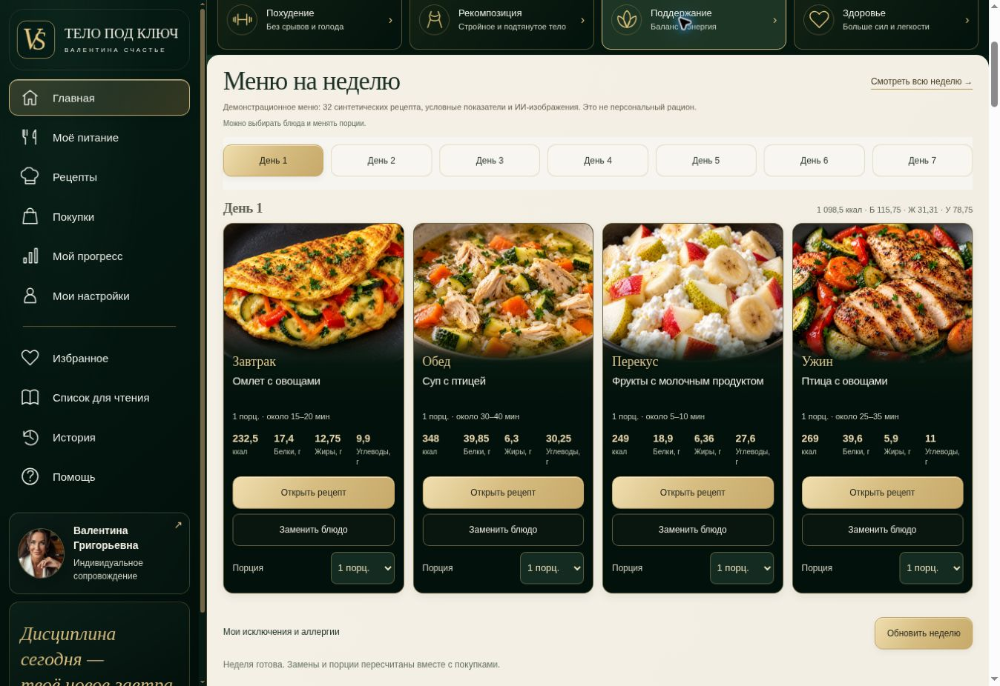
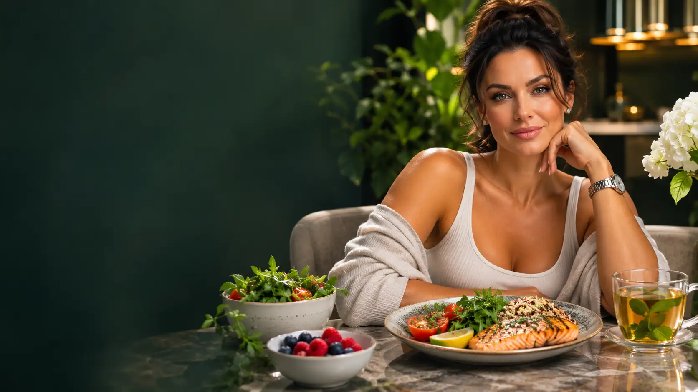

Укажите параметры тела, повседневную активность, цель и предпочтения.
АВТОРСКАЯ СИСТЕМА ВАЛЕНТИНЫ СЧАСТЬЕВаше тело уникально.
Ваше тело уникально.
Питание тоже.
Не очередная диета. Полноценный, вкусный и разнообразный рацион из специально отобранных продуктов, рассчитанный под ваши параметры, активность, вкусы и цель.
4 цели7 дней питанияВаши вкусыБез голодных марафонов
Рацион в смартфоне и браузере — всегда под рукой, дома, в магазине и на кухне.
ТЕЛО ПОД КЛЮЧМОЁ МЕНЮ НА 7 ДНЕЙ
План питания · Понедельник
ПнВтСрЧтПтСбВс

ВКУСНОЕ ПИТАНИЕТворожный мусс с ягодами
РецептыЗаменыПокупки
Иллюстрация концепции интерфейса · не индивидуальный расчёт клиента
НЕ НОВАЯ ДИЕТА. ДРУГОЙ ПОДХОД.Больше не нужно
Больше не нужно
начинать сначала.
Вы не обязаны каждый день решать одни и те же вопросы: что приготовить, сколько положить в тарелку и как удержать достигнутый результат.
У вашего питания может быть система. Причём ваша собственная.ВМЕСТО ЗАПРЕТОВНастоящая еда, а не список «нельзя».
Разнообразные блюда, включая десерты, в рамках индивидуального плана.
ВМЕСТО ХАОСАНеделя продумана заранее.
Рецепты, порции, доступные замены и закупки — в одном месте.
ВМЕСТО КАЧЕЛЕЙЦель меняется. Система остаётся.
От снижения веса к поддержанию и другим задачам — без бесконечных диет.
ЧТО ОТЛИЧАЕТ «ТЕЛО ПОД КЛЮЧ»Не просто меню.
Не просто меню.
Система за каждым блюдом.
Обычная подборка рецептов начинается с ответа «что приготовить». Мы начинаем раньше — с того, из чего, для кого и зачем создаётся рацион.

ОТПРАВНАЯ ТОЧКА
Сначала — ингредиенты.
В основе системы — подготовленная продуктовая база, правила отбора и справочные данные о пищевой ценности. Мы начинаем не со случайной идеи блюда, а с проверяемого состава.
Понятный состав · натуральный вкус · данные о нутриентах
Это интерактивная иллюстрация методики, а не персональный расчёт посетителя. Мы используем рецептуры без добавленного сахара; естественные сахара в ягодах, фруктах и молочных продуктах не исключаются. Полнота данных по отдельным нутриентам различается.
ВАША ЦЕЛЬ — ВАШ МАРШРУТНе четыре диеты.
Не четыре диеты.
Четыре направления жизни.
Меняются цели и потребности. Не обязательно менять всю систему питания. Выберите направление и посмотрите, на чём мы сосредоточим расчёты.

НАПРАВЛЕНИЕ: СНИЖЕНИЕ ВЕСА
Меньше лишнего — без голодного марафона.
Расчёт питания учитывает вашу энергетическую потребность, активность и предпочтения. Цель — двигаться к комфортному весу, не превращая еду в ежедневное ограничение.
Индивидуальные ориентиры · полноценное меню · ваш темп
Это демонстрация принципов подбора рациона, а не автоматически сформированный план для посетителя. Приложение организует питание и не назначает тренировки. Динамика веса и состава тела индивидуальна.
КАК ЭТО РАБОТАЕТОт ваших данных —
Расскажите о себе
Получите расчёт
Откройте меню
Готовьте с удобством
Продолжайте путь
От ваших данных —
к готовой неделе питания.
Энергетические потребности и ориентиры нутриентов определяются по установленной методике.
На семь дней подбираются блюда, сочетания и индивидуальные порции.
Рецепты, доступные замены и список продуктов остаются под рукой.
Актуализируйте параметры и формируйте следующую неделю под свою цель.
ПОСМОТРИТЕ, ЧТО У ВАС ПОД РУКОЙНе просто семь дней.
Не просто семь дней.
Целая система на каждый день.
Знакомство с пользовательским сценарием: меню, приготовление, выбор другого блюда и список закупок.
Ниже — интерактивная демонстрация принципов интерфейса, не действующий персональный расчёт.
РАЗНООБРАЗИЕ В МЕНЮ
ВАШ ПЛАН
Неделя, о которой уже позаботились.
Вместо ежедневного вопроса «что приготовить?» — собранный план на семь дней. Разные приёмы пищи, красивые блюда и порции, рассчитанные с учётом выбранной цели.
ПнВтСрЧтПтСбВс
Откройте день, посмотрите блюда и переходите к рецепту.
ЗА КРАСИВЫМИ СЛОВАМИ — РАБОЧИЙ ИНТЕРФЕЙСКак выглядит
Как выглядит
наш продукт на деле.
Не очередной придуманный макет смартфона. Это сохранённые снимки настоящего браузерного интерфейса тестовой PWA «Тело под ключ»: недельное меню и покупки.
На снимках — более ранняя демонстрационная сборка с синтетическими рецептами и условными расчётами. Функции текущего приватного пилота описаны отдельно ниже. До публичного запуска требуется дополнительная проверка.

МЕНЮ НЕДЕЛИ · ТЕСТОВАЯ PWA
Развернуть снимок
План питания, с которым можно работать.
На этом реальном тестовом экране есть переключение дней, карточки приёмов пищи, рецепты, замены и управление порциями. Показанные числа служат демонстрационными данными.
Почему мы показываем это отдельно: визуальная концепция объясняет настроение бренда, а сохранённый скриншот — фактическое устройство прежнего тестового интерфейса. Текущая приватная версия развивается отдельно; снимки не выдаются за её последний экран.
ОТ ПРОТОТИПА К ПОЛНОЦЕННОМУ ПРИЛОЖЕНИЮЧто уже проверяли.
Что уже проверяли.
Что ещё готовим.
Помимо изображённого интерфейса, мы разрабатываем приватную версию системы с сохранением недельного рациона, авторизацией и защищёнными заменами. Расскажем о возможностях без выдуманных результатов и обещаний, которые пока нельзя подтвердить.
ПРОВЕРЯЛОСЬ В ПИЛОТЕНеделя питания, рецепты и закупки
Проверялись сохранённая неделя на семь дней, состав блюд и связанный список покупок. Это результаты закрытого тестирования, а не запуск для всех.
ПРОВЕРЯЛОСЬ В ПИЛОТЕПриватный профиль и сохранение недели
В закрытых сценариях проверялись доступ пользователя и восстановление ранее созданного плана после повторного входа.
ПРОВЕРЯЛОСЬ В ПИЛОТЕЗащищённое предложение замены
Система предлагает замену по заданным условиям; если подходящего варианта нет, нельзя подменять его случайным блюдом. Тестирование продолжается.
ЭТАП РАЗРАБОТКИИстория изменений и переход между целями
Планируем удобное наблюдение за динамикой и изменение цели внутри приложения. Полноценную работу этих сценариев предстоит подтвердить перед выпуском.
ПУТЬ К РЕЗУЛЬТАТУВы меняетесь.
Вы меняетесь.
Питание меняется вместе с вами.
Снижение веса — не финал истории. Следующий этап может быть поддержанием результата, рекомпозицией или другой целью. При переходе учитываются новые параметры и условия расчёта.
ВАША ПЕРВАЯ ЦЕЛЬСнижение веса
НОВЫЙ ЭТАППоддержание
ПРИ ЖЕЛАНИИРекомпозиция
ВСЕГДА АКТУАЛЬНОПолноценное питание
Как отслеживать прогресс?
Вес, объёмы, динамика привычек и индивидуальные ощущения помогают оценивать движение к цели. Для сравнения важна тенденция во времени, а не единичная цифра. История показателей и удобный переход между целями входят в дорожную карту интерфейса; их выпуск и точный функционал будут подтверждены тестами.
![Валентина Счастье — автор системы «Тело под ключ»]()
ВАЛЕНТИНА СЧАСТЬЕ
Автор системы
Автор системы
ЗА ТЕХНОЛОГИЕЙ СТОИТ ЧЕЛОВЕК
Опыт эксперта.
Опыт эксперта.
Точность системы.
«Тело под ключ» выросло из практики работы с питанием, физической активностью и привычками. Я создаю инструмент, который помогает людям применять понятные принципы полноценного питания в обычной жизни — без необходимости каждый день обращаться к эксперту за новым меню.
Валентина Счастье
ПРИНЦИП КАЧЕСТВАСначала ингредиенты, потом рецепты.
Отбор состава и данные о пищевой ценности — фундамент, а не декоративное обещание.
ПРИНЦИП ИНДИВИДУАЛЬНОСТИНе меню на всех — расчёт под человека.
Цель, параметры, активность, предпочтения и размеры порций взаимосвязаны.
ПРИНЦИП УДОБСТВАПитание должно работать в реальной жизни.
Разнообразная неделя, понятные рецепты, замены и покупки без бесконечного планирования.
Важно: индивидуальное сопровождение и автоматический расчёт в приложении — разные форматы. Приложение предназначено для здоровых взрослых, а персональные тренировки и медицински сложные ситуации не относятся к автоматическому меню.
Больше об авторе и экспертном опытеНАША РАЗНИЦАРецепт —
Рецепт —
это идея.
А система — решение.
ИИ способен предложить меню по запросу. Но красивый текст сам по себе не гарантирует согласованности недели, проверяемого состава и расчёта порций.
Не список.
Целая неделя.
Целая неделя.
Отбор ингредиентовНе случайный набор продуктов
Расчётная методикаПитание под данные и выбранную цель
Связанный результатБлюда, порции, замены и закупки в одном плане
Сравниваем принципы построения продукта, а не утверждаем, что все решения ИИ работают одинаково или что любая методика исключает ошибки.
ВАША НЕДЕЛЯВкусное питание.
Вкусное питание.
Ваш собственный темп.
Готовый недельный план, рецепты, замены и список покупок — без ежедневных догадок «что сегодня приготовить».
700 ₽ за 7 дней
Цена недельного доступа. Продукты приобретаются отдельно. Условия доступа и оплата будут активированы после завершения клиентских проверок.
Задать вопрос о доступе ↗Без давления и марафонов.
Не нужно соревноваться с другими, следовать одинаковым диетам или постоянно отказываться от любимого вкуса. Вы выстраиваете питание под свои параметры и ритм жизни, постепенно превращая ежедневные решения в удобную систему.
Тело под ключ —
полноценное питание под вас.

ВАЖНО ЗНАТЬВопросы, на которые
Вопросы, на которые
стоит ответить заранее.
Можно ли пользоваться приложением без тренировок?
Да. Основная функция приложения — индивидуальная организация питания. Оно не назначает тренировочные программы; при необходимости физическая нагрузка обсуждается в личной работе со специалистом.
Почему меню только на семь дней?
Семидневный цикл помогает удобно готовить, покупать продукты и обновлять рацион по мере изменения предпочтений и цели. Это не семидневная диета.
Как перейти от похудения к поддержанию?
Цель меняется вместе с расчётными ориентирами рациона. Удобный сценарий изменения цели и история прогресса предусмотрены продуктовой дорожной картой; клиентские функции проходят проверку до запуска.
Может ли каждый похудеть за одну неделю?
Нет. Вес и состав тела меняются индивидуально. Питание может поддерживать движение к цели, но определённое снижение за семь дней не гарантируется.
Кому подходит автоматический рацион?
Система предназначена для здоровых взрослых. При заболеваниях, симптомах, приёме лекарств и особых медицинских потребностях нужны рекомендации врача и индивидуальная оценка; автоматический рацион не заменяет медицинскую помощь.